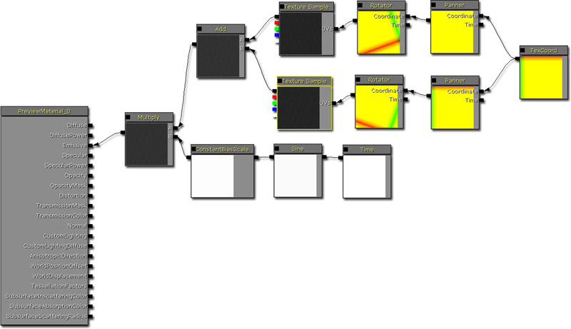
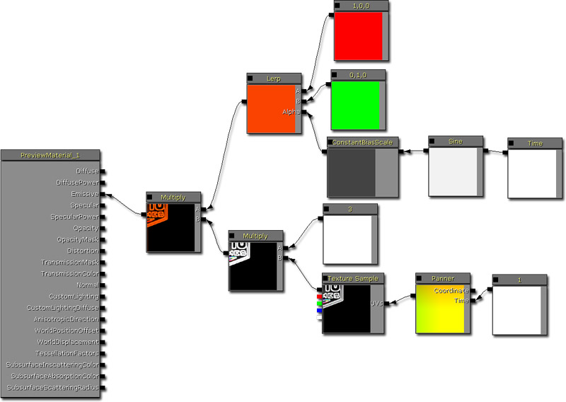
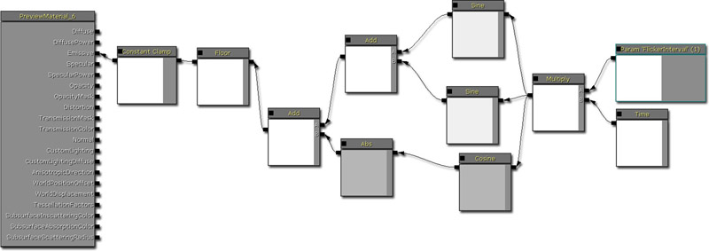
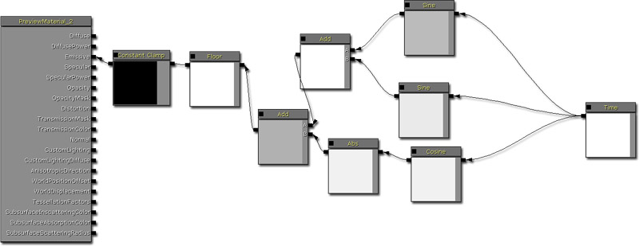
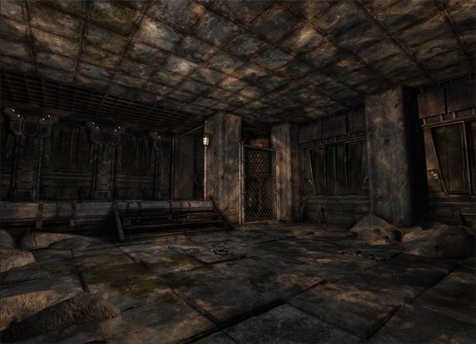
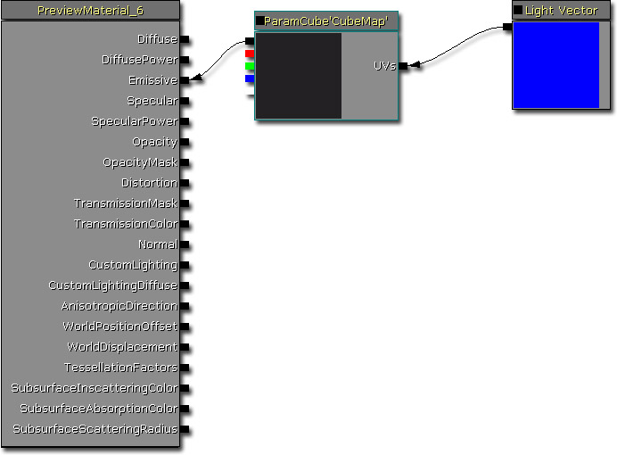
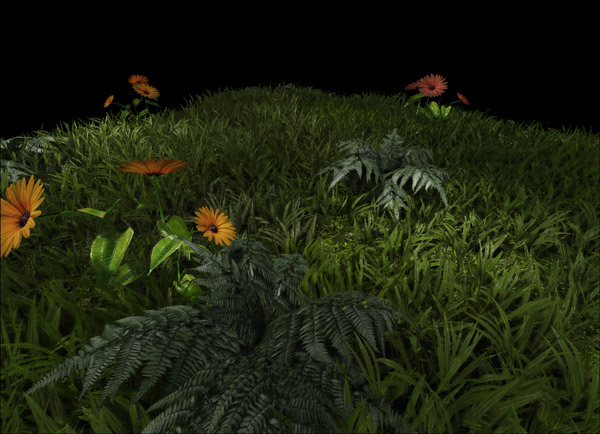
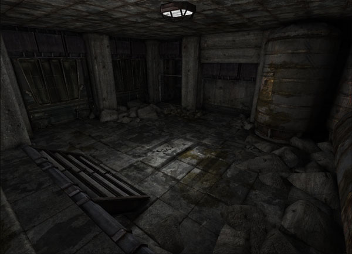

UDN
Search public documentation:
DevelopmentKitGemsUsingLightFunctionsCH
English Translation
日本語訳
한국어
Interested in the Unreal Engine?
Visit the Unreal Technology site.
Looking for jobs and company info?
Check out the Epic games site.
Questions about support via UDN?
Contact the UDN Staff
日本語訳
한국어
Interested in the Unreal Engine?
Visit the Unreal Technology site.
Looking for jobs and company info?
Check out the Epic games site.
Questions about support via UDN?
Contact the UDN Staff
UE3 主页 > 虚幻开发工具包精华文章 > 使用光源函数
使用光源函数
于 2011 年 6 月对 UDK 进行最后测试
可以与 PC 兼容
概述
光源函数允许您创建更多生动形象的光照设置，例如，闪烁的光源、贴图光源等等。如果您使用的是虚幻引擎 2，那么光源函数与投射器相似。光源函数使用的是虚幻引擎 3 的材质系统，这样可以使它们的创建过程变得更简单。 这个开发工具包精华文章会对各种各样的光源函数进行说明，可以使用它们强化您的游戏。请查看光源函数页面了解所有有关它们的技术详细信息。
贴图频闪光源
贴图频闪光源通常会使用从光源向量中投射出来的贴图映出一个场景。这种方法可以使您轻松地将贴图投射到墙壁上，并且适用于您可能希望从水中的光线中投射焦散线的情况。 (鼠标悬停在图片上查看动画效果)

材质布局
这个材质的工作原理是平移和旋转缩放的贴图并添加结果；最终形成焦散线。为了得到屏幕上的频闪效果，需要使用 sine 调节整体亮度。在这里使用 ConstantBiasScale 将 sine 从 -1.f - 1.f 转换到 0.f - 1.f。然后将结果叠加起来，传递给自发光。
霓虹灯频闪光源
霓虹灯频闪光源与贴图频闪光源相似，只是它可以投射一个贴图并更改这个光源的颜色。这种类型的光源将会用于霓虹灯信号、投射器等等。在这个特定示例中，通过限定贴图创建诸如投射器这样的操作行为，这样它不会平铺显示，而且使用其中含有聚光灯光源而不是点光源的光源函数。 (鼠标悬停在图片上查看动画效果)

材质布局
该材质的工作方式与贴图频闪光源相似，但是它会说明如何在两个不同并最终形成所示的“霓虹灯”的颜色之间进行插值。通过使用偏移的 sine（将 sine 从 -1.f - 1.f 转换为 0.f - 1.f）进行这项操作，然后在两个颜色之间线性插入。然偶与贴图叠加。为什么对贴图进行限定而且样本有一个 0.5f 的平移常量的原因，因为只有 0.5f，聚光灯光源才会正确地投射这个贴图。
简单频闪光源
简单频闪光源简单地使用可预测性时间模式提亮然后再使房间变暗。这是一个非常简单的光源函数，因为它只会以常量速率更改光源的亮度。 (鼠标悬停在图片上查看动画效果)


材质布局
该材质的工作方式是简单地将偏移的 sine 直接输出到自发光中。
贴图闪烁光源
贴图闪烁光源是在您希望房间出现闪烁现象但是随机投射阴影的时候会用到的效果。它可以为房间营造多一点氛围和动态效果，这些是简单闪烁光源无法做到的。 (鼠标悬停在图片上查看动画效果)


材质布局
该材质的工作方式是添加两个正在旋转和平移的缩放的贴图取样器。这样它可以保证结果在 0.f 和 1.f 之间，然后将它输出到自发光输入端。
间隔闪烁光源
间隔闪烁光源允许您使用简单的方法调整闪烁光源。它可以确保在您使用光源函数的时候，您可以使用材质实例化更改它闪烁的速率。 (鼠标悬停在图片上查看动画效果)

材质布局
该材质的工作方式是使用两个 sine 和 cosine 并添加结果。间隔速率可以通过使用名为 FlickerInterval 的标量参数调整 Time 进行更改。然后将 sine 和 cosine 添加在一起取下限（它会返回最大的整数），限定结果并将其输出到自发光中。
简单闪烁光源
该材质的工作方式与间隔闪烁光源完全相同，只是它没有您可以更改的属性。 (鼠标悬停在图片上查看动画效果)


材质布局

立方体映射光源
使用贴图时，您可以使用法线 2D 贴图或您可以使用一个立方体贴图。立方体贴图在光源具有多个方向的时候更加有效，例如，点光源。对于可以定义单一方向的光源，例如，方向型光源以及聚光灯光源。在使用电光源的 2D 贴图（或其中具有多个方向的其他光源）的时候，您会看到贴图拉伸或分段现象。确切地说，立方体贴图可以解决这个问题。

材质布局
该材质只需将立方体贴图输出到自发光中。它将立方体贴图查看坐标设置为光源向量。
Cloud light（云光源）
该光源函数只会输出封装、平移的贴图模拟云经过的情况。添加很简单，但是向场景中添加了这么多内容。

材质布局

性能消耗少的阴影光源
可以使用这项技术进行性能消耗少的动态阴影。但是，因为您可以使用贴图，所以您可以创建蒙板生成阴影区域。不过，要注意这项技术只有在光源和投射阴影的对象之间没有任何东西的情况下才有作用。 (鼠标悬停在图片上查看动画效果)


材质布局

下载
- 下载这篇精华文章中用到的内容。(LightFunctionGems.zip)

{kind=link}
{kind=link}
{kind=link}
{kind=link}